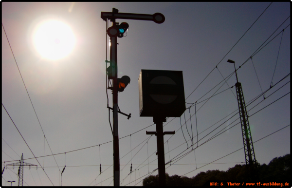

TF-Ausbildung.de
Signalbuch-Online
Signale übersichtlich nach Signalgruppen geordnet – mit schematischen Darstellungen, Originalbildern und weiterführenden Beispielen.

Willkommen
Im Signalbuch-Online
Hier finden Sie alle derzeit gültigen Signale.
Die Bedeutungen der Signale entsprechen denen des derzeit gültigen Signalbuchs.
Was ist an diesem Signalbuch anders?
Zusätzlich zu den schematischen Darstellungen der Signale haben wir auch viele Originalbilder mit eingebunden.
So versinkt die Praxis nicht in der Flut der Theorie. Auch wird auf Beispiele verlinkt.
Wichtiger Hinweis
Wir weisen darauf hin, dass dieses Signalbuch kein offizielles ist!
Die Texte entsprechen zwar denen des Signalbuchs, dennoch sind Fehler nicht zu 100 % auszuschließen. Wir bitten dies zu berücksichtigen.